This function creates a volcano plot using ggplot2 based on provided datasets. It is particularly useful for visualizing differential gene expression data.
Arguments
- data1
Data frame for the primary dataset. Accepts output from DESeq2 (
results()), edgeR (topTags()), or limma (topTable()). Gene identifiers can live in agenescolumn or in the row names.- data2
Data frame for the secondary dataset (genes of interest). Uses the same auto-detection as
data1. Default is NULL.- size_var
Variable for determining the size of points. Options are
"log2FoldChange"and"pvalue". Default is NULL (fixed size).- p_value
Threshold for statistical significance. Default is 0.05.
- fc
Fold change threshold for determining upregulated or downregulated genes. Default is 1.
- sig_col
Column used to call significance and to build the y-axis. Either
"padj"(the adjusted p-value / FDR, the default and the recommended cutoff for calling hits in most DE workflows) or"pvalue"(the raw p-value). The y-axis and the significance segment follow this choice, so the plot stays internally consistent. When the default"padj"is used but the data has no adjusted-p column, ggvolc falls back to the raw p-value.- label_top
Optional integer. When supplied, the
label_topmost significant genes (smallestsig_col, among significant genes) are highlighted and labelled automatically, without building a separatedata2. Combined withdata2if both are given. Default NULL.- label_dir
Direction to draw the
label_topgenes from. One of"both"(top N over all significant genes, the default),"up"(top N upregulated),"down"(top N downregulated), or"each"(top N upregulated and top N downregulated, i.e. up to 2N labels). Ignored whenlabel_topis NULL.- title
Plot title. Default NULL (no title).
- interactive
Logical. If TRUE, returns an interactive ggiraph
girafewidget where hovering a point reveals the gene name and its statistics. Requires the optional ggiraph package. Default FALSE.- not_sig_color
Color for non-significant genes. Default is "#808080".
- down_reg_color
Color for downregulated genes. Default is "#00798c".
- up_reg_color
Color for upregulated genes. Default is "#d1495b".
- add_seg
Logical. If TRUE, dashed lines will be added to the plot indicating the p-value and fold change thresholds. Default is FALSE.
Value
A ggplot2 object displaying the volcano plot, or, when
interactive = TRUE, a ggiraph girafe widget.
Details
Column names from DESeq2, edgeR, and limma are automatically detected and mapped internally, so you can pass the output of any of the three pipelines directly.
Examples
# Load example datasets included in the package
data(all_genes)
data(attention_genes)
# Create a basic volcano plot with default settings
# Points are colored by significance (p < 0.05, |log2FC| > 1)
ggvolc(all_genes)
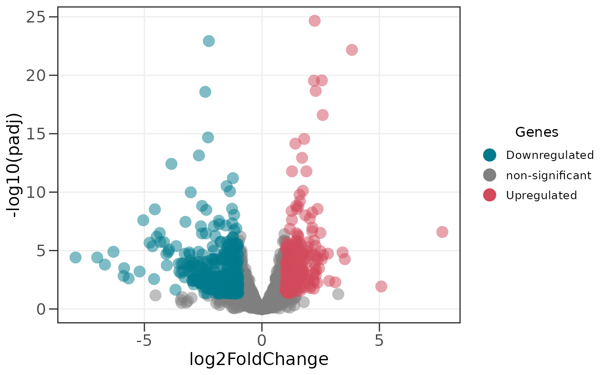
# Highlight specific genes of interest with labels
# These genes are shown with black borders and gene names
ggvolc(all_genes, attention_genes)
# Add dashed lines to indicate significance thresholds
ggvolc(all_genes, attention_genes, add_seg = TRUE)
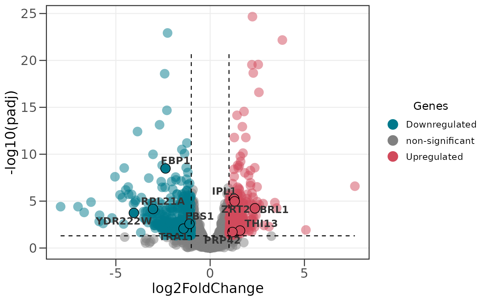
# Significance is called on the adjusted p-value (FDR) by default;
# use the raw p-value instead with:
ggvolc(all_genes, sig_col = "pvalue")
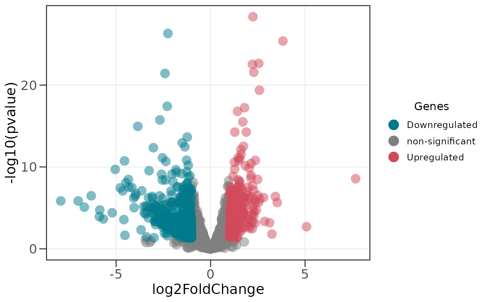
# Automatically label the 10 most significant genes
ggvolc(all_genes, label_top = 10)
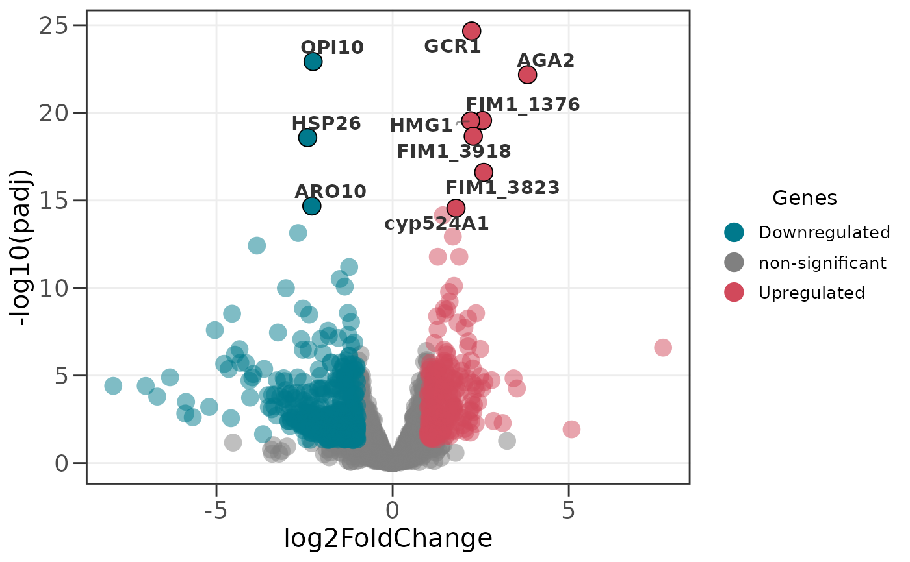
# Label the top 10 upregulated genes only
ggvolc(all_genes, label_top = 10, label_dir = "up")
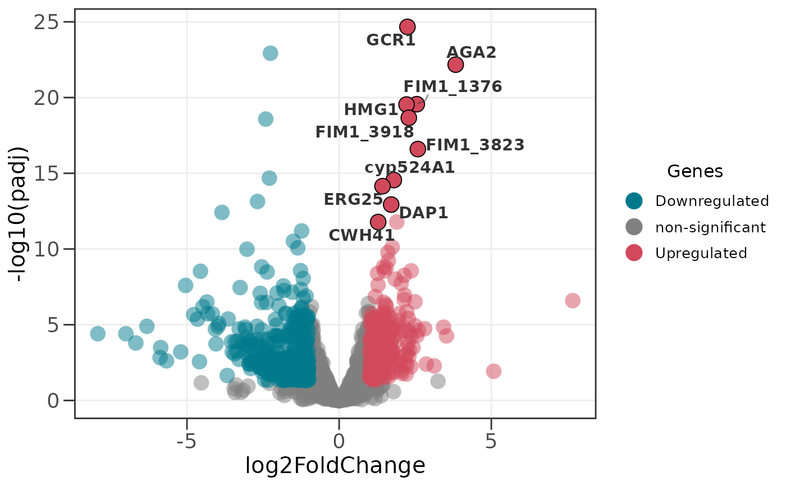
# Label the top 8 of each direction (up to 16 labels)
ggvolc(all_genes, label_top = 8, label_dir = "each")
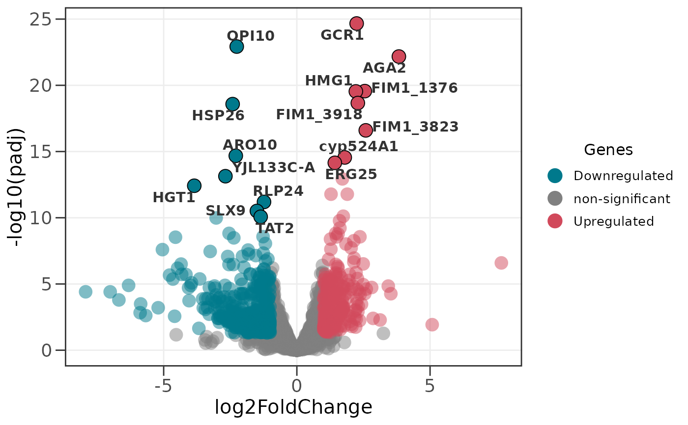
# Give the plot a title
ggvolc(all_genes, title = "Treated vs. control")
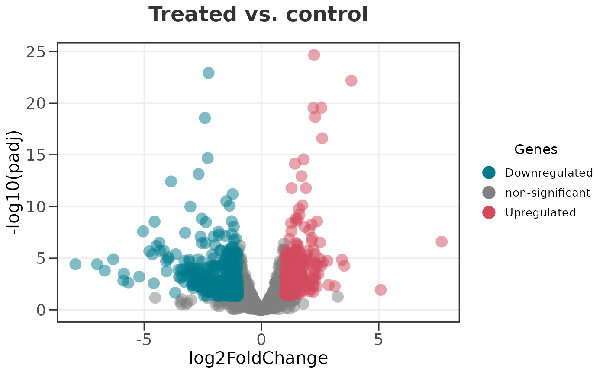
# Customize colors for up- and down-regulated genes
ggvolc(all_genes, attention_genes,
up_reg_color = "#E63946",
down_reg_color = "#457B9D")
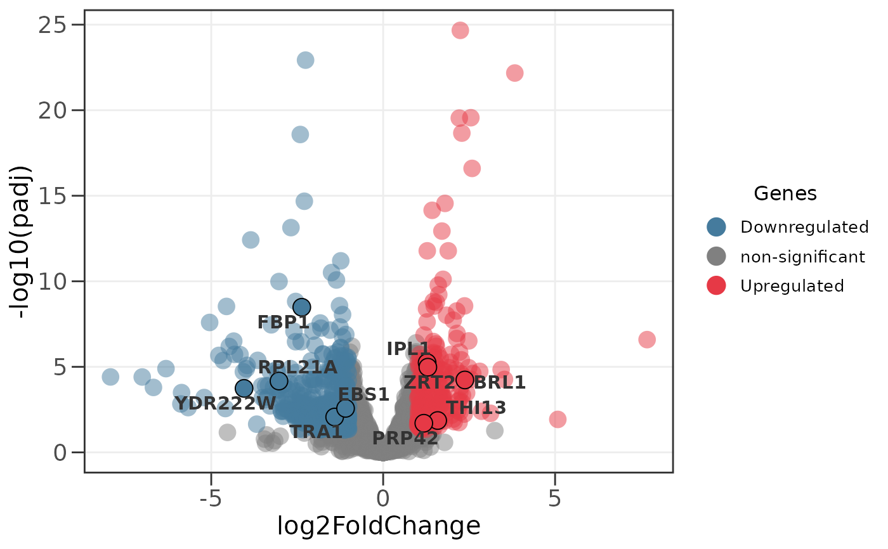
# Scale point size by p-value instead of default
ggvolc(all_genes, attention_genes, size_var = "pvalue")
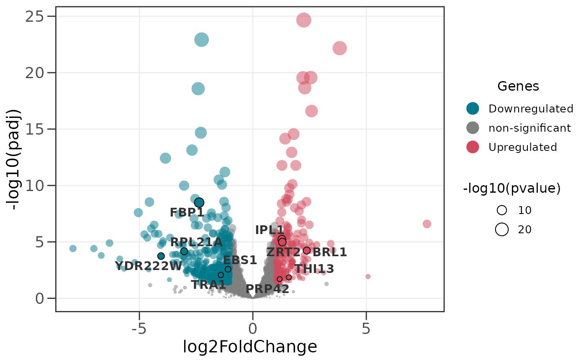
# Adjust significance thresholds (p-value and fold change)
ggvolc(all_genes, p_value = 0.01, fc = 2)
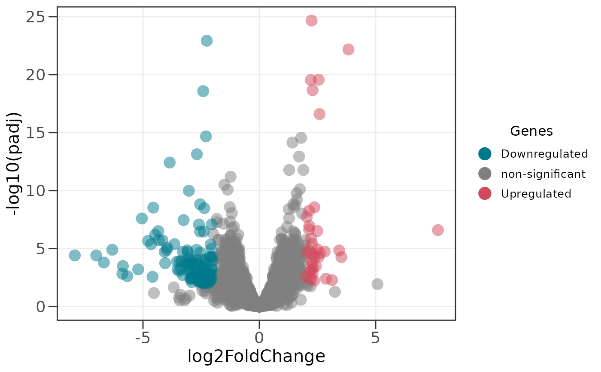
# edgeR-style input works directly
edger_df <- data.frame(
genes = paste0("gene", 1:50),
logFC = rnorm(50, 0, 2),
logCPM = runif(50, 5, 15),
PValue = 10^-runif(50, 0, 6),
FDR = 10^-runif(50, 0, 5)
)
ggvolc(edger_df)
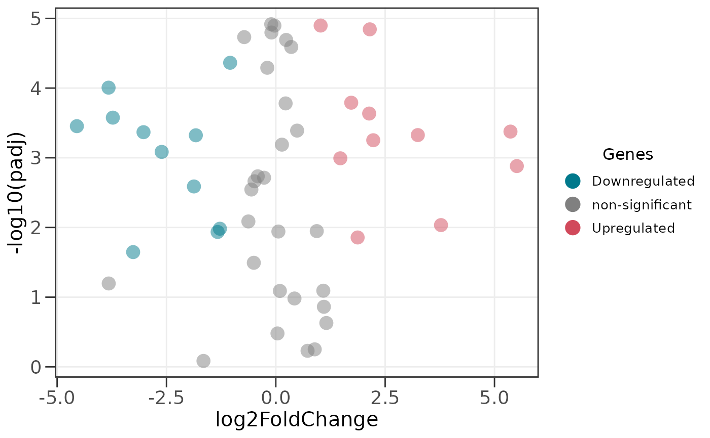
# limma-style input works too
limma_df <- data.frame(
genes = paste0("gene", 1:50),
logFC = rnorm(50, 0, 2),
AveExpr = runif(50, 5, 15),
t = rnorm(50),
P.Value = 10^-runif(50, 0, 6),
adj.P.Val = 10^-runif(50, 0, 5)
)
ggvolc(limma_df)
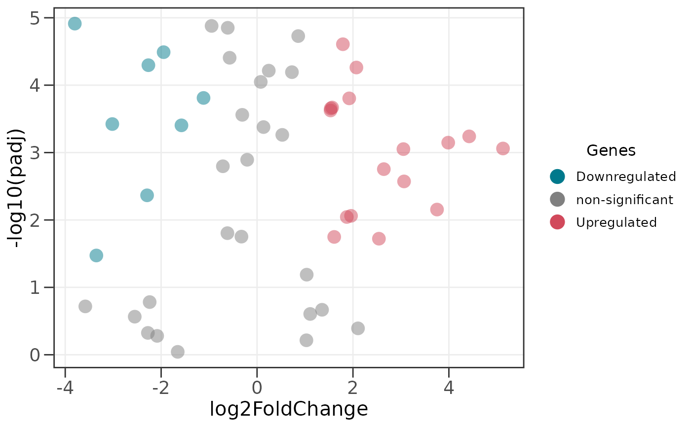
if (FALSE) { # \dontrun{
# Interactive volcano (requires the ggiraph package): hover a point to
# see the gene name and its statistics
ggvolc(all_genes, attention_genes, interactive = TRUE)
} # }